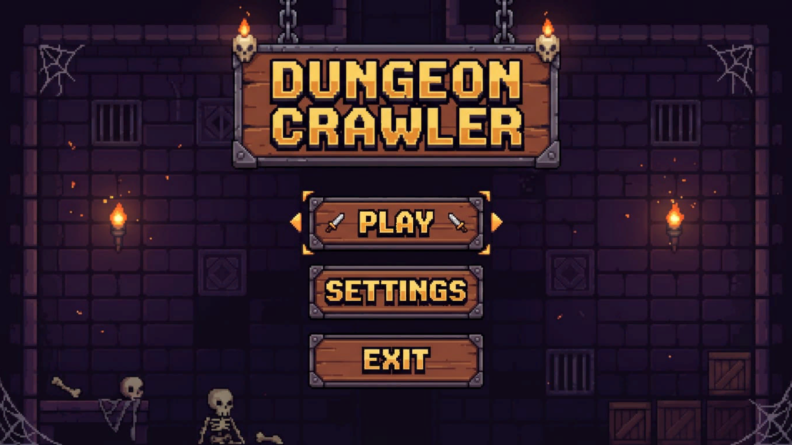
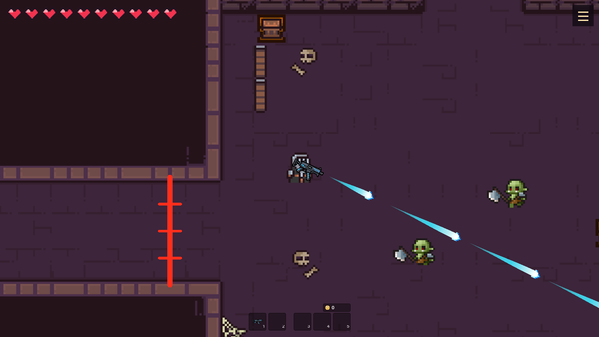
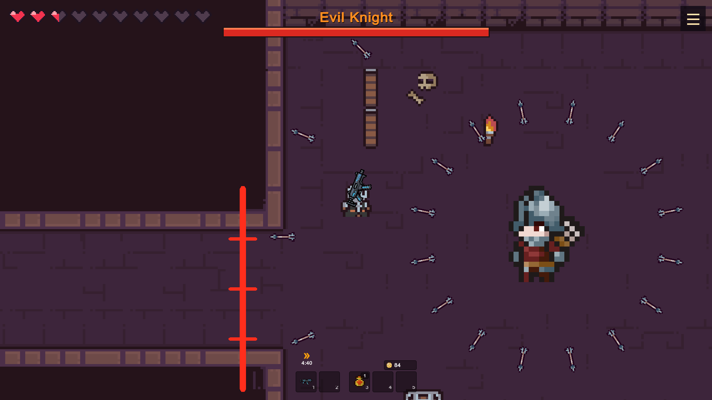

Top-down combat
Battle enemies in a room-based dungeon view and fire projectiles across the arena.
CASE STUDY · GAME DEVELOPMENT
A solo-created top-down pixel-art action game built around dungeon combat, survival, and a boss encounter.
GAMEPLAY PREVIEW
Three moments from the game: the opening menu, live combat, and a fight against the Evil Knight.



GAMEPLAY & SYSTEMS
The screenshots show a focused action loop: navigate a dungeon arena, track health and equipment, defeat enemies, and take on a boss.
Battle enemies in a room-based dungeon view and fire projectiles across the arena.
Track remaining health through heart icons and keep equipment visible in a numbered hotbar.
Face multiple enemies on screen while managing space and incoming attacks.
Challenge the Evil Knight, with a dedicated health bar and a projectile pattern around the arena.
The pixel-art style, title screen, combat interface, and gameplay are part of one cohesive solo-created project.
BUILD NOTES
I created the full project independently, taking ownership of its design and implementation.
Solo creator across the complete game project, including gameplay, interface, and visual presentation.
Unity
I learned how to bring combat, player feedback, and enemy behavior together into a cohesive game loop, then refine the experience through iteration and playtesting.